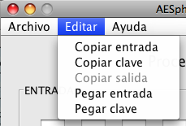

A través de esta ventana podremos comprobar el funcionamiento de la fase de ShiftRows en la cual se realiza una rotación cíclica de los bytes de la matriz de entrada.
En los campos de la matriz Input podremos introducir parejas de valores hexadecimales para poder realizar la transformación.

Estos valores podemos introducirlos manualmente o bien a través del menú Editar eligiendo la opción Pegar Input, la cual pegará el contenido del portapapeles sobre las celdas de la matriz. Si por el contrario queremos que los valores de la matriz sean aleatorios, pulsando el botón "Aleatorio" conseguiremo este efecto.
Pulsando el botón "Ejecutar" se comprobará que los valores son correctos y de ser así se realizará la transformación.
Pulsando el botón "Atrás" volveremos a la pantalla de operaciones.
Desde el menú Edición, podremos acceder a distintas operaciones relativas al copiado de matrices.
Para una información más detallada del funcionamiento de ShiftRows vea:
Explicación ShiftRows